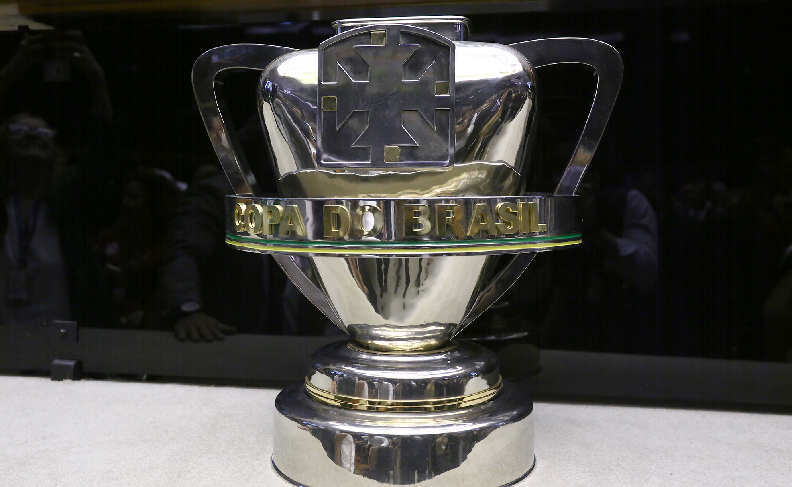

A Copa do Brasil ocupa um lugar diferente no calendário do futebol nacional. É o campeonato em que tradição, pressão, dinheiro, vaga continental e chance de surpresa convivem o tempo todo. Para os gigantes, vale taça, premiação alta, vaga na Libertadores e resposta imediata ao torcedor. Para clubes de menor investimento, pode ser a oportunidade de ganhar projeção nacional, fazer caixa e viver uma daquelas noites que entram para a história.
Desde a sua criação, a competição cresceu em tamanho, valor e importância. O torneio nasceu como uma forma de ampliar o alcance nacional do calendário e colocar clubes de diferentes estados em uma disputa de grande visibilidade. Mais de três décadas depois, virou uma das competições mais estratégicas do país, com impacto esportivo, financeiro e simbólico.
A Copa do Brasil manteve uma característica que explica sua força: no mata-mata, favoritismo ajuda, mas não garante nada. Um erro pode custar uma temporada. Uma noite inspirada pode mudar a história de um clube. É essa mistura de risco, drama e oportunidade que tornou o torneio tão relevante.
Como nasceu a Copa do Brasil
Foi criada em 1989 com uma proposta clara: dar mais espaço nacional a clubes de diferentes estados e criar uma competição eliminatória de grande alcance em um país de dimensões continentais.
A primeira edição teve 32 participantes. O campeão foi o Grêmio, que venceu o Sport na final e abriu a galeria de vencedores da competição. Naquele momento, o torneio ainda era menor, menos valioso financeiramente e com outro peso dentro do calendário, mas já carregava a essência que o marcaria nas décadas seguintes: confrontos eliminatórios, viagens longas, choque entre realidades diferentes e margem pequena para erro.
Esse ponto ajudou a construir a identidade da competição. Desde o começo, a Copa do Brasil não foi só uma disputa por título. Ela também virou vitrine, fonte de receita e caminho de afirmação para clubes que nem sempre tinham espaço constante no centro do debate nacional.
Embora tenha nascido apenas em 1989, o modelo de copa nacional eliminatória tem raízes muito mais antigas no futebol. O maior exemplo é a FA Cup, a copa de clubes mais antiga do mundo, que ajuda a explicar por que torneios de mata-mata carregam tanto valor histórico: eles misturam tradição, clubes grandes, surpresas, jogos decisivos e a chance de uma equipe menor atravessar o caminho dos favoritos.
De 1989 a 2026: como o torneio mudou
A comparação entre a primeira edição e o modelo atual mostra o tamanho da transformação. Na primeira edição, começou com 32 clubes. Em 2026, o torneio chegou à sua maior versão, com 126 participantes, 155 partidas e nove fases. A mudança também ampliou a presença das federações estaduais e deu mais peso à competição como produto esportivo e comercial.
O formato de 2026 também marca uma virada histórica: pela primeira vez, a Copa do Brasil passa a ter final em jogo único. As quatro primeiras fases são disputadas em partida única. Da quinta fase até as semifinais, os confrontos acontecem em ida e volta. A decisão será em jogo único, encerrando a temporada nacional no dia 6 de dezembro.
Na prática, a competição ficou maior na base e mais concentrada no fim. O novo desenho tenta equilibrar representatividade nacional, redução de datas para clubes da Série A e aumento do apelo comercial da decisão. A final única também aproxima a Copa do Brasil do modelo usado em torneios continentais, com evento concentrado, estádio escolhido pela organização e maior potencial de mobilização.
A fama do campeonato
Se existe uma marca da Copa do Brasil, é o mata-mata. E isso muda tudo.
No Campeonato Brasileiro por pontos corridos, um tropeço pode ser corrigido mais adiante. Na Copa do Brasil, muitas vezes não. O erro pesa mais, a pressão chega mais cedo e o ambiente de decisão aparece desde as primeiras fases.
Também é daí que vem a relação do torcedor com o torneio. A competição sempre teve cara de drama, de jogo tenso, de classificação arrancada no detalhe, de favorito ameaçado e de zebra rondando. Em poucos campeonatos do país a sensação de risco é tão constante.
Essa característica também explica por que atravessa diferentes perfis de clubes. Para quem tem elenco forte, é chance de transformar qualidade em taça. Para quem tem investimento menor, é oportunidade de sobreviver a uma chave, eliminar um favorito e mudar a temporada em dois jogos — ou, no novo formato inicial, em apenas uma partida.
O novo formato
A Copa do Brasil de 2026 passou a ter nove fases. O aumento no número de clubes fez a competição saltar para 126 participantes e 155 jogos. As quatro primeiras fases são em jogo único, o que aumenta o risco de eliminação precoce e dá ainda mais valor ao mando, ao sorteio e à preparação imediata.
A partir da quinta fase, os confrontos voltam ao modelo de ida e volta até as semifinais. Esse trecho da competição tende a concentrar clubes de maior investimento, incluindo equipes da Série A, que passam a entrar mais adiante no torneio.
A final em jogo único é a principal novidade simbólica. Ela muda a lógica histórica da decisão, que por décadas foi disputada em dois jogos. Em vez de cada finalista levar uma partida para sua casa, o título passa a ser decidido em um evento único, com sede definida pela organização. A CBF ainda trabalhava com critérios como estrutura, capacidade, deslocamento e possibilidade de receber duas torcidas para escolher o palco da decisão.
Premiação que mudou o peso do torneio
A Copa do Brasil sempre teve valor esportivo, mas a premiação transformou o torneio em prioridade para muitos clubes. Em 2026, a CBF destinou cerca de R$ 500 milhões em cotas aos participantes. O campeão recebe R$ 78 milhões apenas pela final, enquanto o vice fica com R$ 34 milhões. Como os clubes também acumulam valores por fases anteriores, a campanha pode representar uma das maiores receitas esportivas da temporada.
Essa dimensão financeira muda a leitura da competição. Para clubes grandes, cair cedo significa perder premiação, exposição, pressão positiva e chance de título. Para clubes médios e pequenos, avançar algumas fases pode ter impacto direto no orçamento, no calendário, na folha salarial e no planejamento do ano seguinte.
Por isso, a Copa do Brasil não é apenas uma competição de mata-mata. É também uma ferramenta de sobrevivência econômica, valorização de elenco e fortalecimento institucional. Cada fase pode significar dinheiro novo, visibilidade nacional e mudança de patamar.
Maiores campeões
O Cruzeiro é o maior campeão com seis títulos, e ocupa o ponto mais alto da história do torneio. A força celeste ajuda a explicar como a competição recompensa clubes capazes de se manter competitivos em diferentes gerações, suportar pressão de mata-mata e decidir finais contra adversários de peso.
Lista dos maiores campeões:
- Cruzeiro — 6 títulos
- Grêmio — 5 títulos
- Flamengo — 5 títulos
- Corinthians — 4 títulos
- Palmeiras — 4 títulos
- Atlético-MG — 2 títulos
- Atual Campeão(2025) — Corinthians
Essa lista ajuda a entender um ponto importante: a Copa do Brasil abre espaço para surpresa, mas repetir títulos exige estrutura, elenco, casca e força em mata-mata. Não basta jogar bem uma edição. Para construir domínio histórico, é preciso competir em alto nível por muitos anos.
O Grêmio foi o primeiro campeão e construiu uma relação profunda com o torneio. Se tornou pentacampeão e é uma das camisas mais tradicionais da competição.
O Flamengo também transformou a Copa do Brasil em parte importante de sua galeria nacional, com títulos em diferentes fases do clube. Com cinco títulos também, mostrando a força do clube carioca no mata a mata nacional.
Entre os paulistas, Corinthians e Palmeiras chegaram ao tetracampeonato em trajetórias diferentes, mas igualmente relevantes.
Os demais campeões
Além dos clubes que concentram o maior número de títulos, a Copa do Brasil também teve outros vencedores que ajudam a contar a história da competição. Onze equipes conquistaram o torneio uma vez:
- Criciúma (1991)
- Internacional (1992)
- Juventude (1999)
- Santo André (2004)
- Paulista de Jundiaí (2005)
- Fluminense (2007)
- Sport (2008)
- Santos (2010)
- Vasco (2011)
- Athletico-PR (2019)
- São Paulo (2023)
Embora os gigantes tenham forte presença no histórico do torneio, o formato eliminatório também abriu espaço para campanhas improváveis e conquistas capazes de marcar gerações de torcedores.
Em alguns casos, o título representou muito mais do que uma taça: mudou o patamar esportivo do clube, garantiu presença em competições continentais e transformou uma campanha em um dos capítulos mais importantes de sua história.
As zebras que ajudaram a construir o torneio
A Copa do Brasil nunca foi feita apenas pelos clubes mais ricos ou mais vitoriosos. Parte da alma do campeonato está justamente nas zebras.
É impossível falar da história do torneio sem lembrar de times que fugiram do roteiro esperado. O Criciúma foi campeão em 1991. O Juventude levantou a taça em 1999. O Santo André chocou o país em 2004. O Paulista de Jundiaí venceu em 2005. São conquistas que ajudaram a transformar a Copa do Brasil em um campeonato diferente dos outros.
Esses títulos deixaram uma mensagem que continua viva: na Copa do Brasil, camisa pesa, investimento conta, mas a zebra sempre pode aparecer. E é justamente isso que mantém o torneio tão atraente para quem joga, para quem cobre e para quem torce.
As vagas na Libertadores
A premiação esportiva ganhou ainda mais peso a partir de 2026 porque passou a distribuir duas vagas para a Copa Libertadores aos seus finalistas. O campeão garante classificação direta para a fase de grupos da competição continental, enquanto o vice-campeão fica com uma vaga na fase preliminar, a chamada pré-Libertadores.
Na prática, chegar à decisão já representa uma recompensa importante. Os dois clubes finalistas asseguram presença na principal competição continental do ano seguinte, mas entram em momentos diferentes do torneio.
Esse novo cenário muda ainda mais o planejamento dos clubes. Uma campanha bem-sucedida na Copa do Brasil pode salvar uma temporada irregular no Campeonato Brasileiro, garantir calendário internacional, aumentar receitas futuras e fortalecer o elenco para o ano seguinte.
Para os grandes clubes, o torneio se tornou uma rota ainda mais valiosa para cumprir uma obrigação esportiva: estar na Libertadores. Para equipes médias ou que estejam distantes das primeiras posições do Brasileirão, alcançar a final pode representar uma oportunidade rara de chegar ao torneio continental por outro caminho, ainda que seja necessário disputar a fase preliminar em caso de vice-campeonato.
Final única muda a história da competição
Representa uma mudança estrutural importante. Durante décadas, a Copa do Brasil foi decidida em ida e volta, com cada finalista tendo a chance de jogar diante de sua torcida. Esse modelo construiu decisões marcantes, viradas dramáticas e ambientes históricos.
A partir de 2026, a decisão em jogo único muda a dinâmica emocional da final. Não há mais jogo de volta para corrigir erro. Não há vantagem de decidir em casa. O título passa a depender de uma partida concentrada, em ambiente neutro ou previamente definido, com peso maior para estratégia, controle emocional, logística e preparação específica.
Esse formato pode aumentar o apelo televisivo e comercial da decisão, mas também muda parte da tradição da competição. A Copa do Brasil passa a ter uma final mais próxima de um evento nacional, enquanto mantém o mata-mata como essência nas fases anteriores.
Por que a competição continua tão relevante
A força atual passa por três pontos claros.
O primeiro é esportivo. O campeão conquista uma taça nacional de grande peso e garante vaga na Libertadores. Em um calendário competitivo, isso pode mudar completamente a avaliação de uma temporada.
O segundo é financeiro. A premiação por fases faz com que cada avanço tenha impacto concreto no orçamento. Para clubes fora do topo econômico, isso pode significar estabilidade. Para clubes grandes, representa receita relevante e cobrança proporcional.
O terceiro é simbólico. Ganhar a Copa do Brasil ainda tem enorme valor para o torcedor porque é um título de mata-mata, com pressão, ambiente de decisão e margem pequena para erro. Não é uma taça conquistada no automático.
A Copa do Brasil no futebol brasileiro de hoje
Mesmo com calendário apertado e várias competições ao mesmo tempo, segue com peso próprio. Ela entrega o que o torcedor brasileiro gosta de ver: confronto decisivo, tensão, classificação no detalhe, rivalidade, estádio cheio e chance real de surpresa.
O novo formato aumenta a escala do torneio, a final única muda a leitura da decisão e a premiação reforça a importância econômica da competição. Ainda assim, a essência continua a mesma: é um campeonato em que cada jogo pode virar história.
A Copa do Brasil mistura tradição, dinheiro, vaga continental, pressão e imprevisibilidade. Poucos torneios no futebol brasileiro conseguem juntar tudo isso com tanta força. Por isso, mais do que uma competição paralela ao Brasileirão, ela se tornou um dos principais produtos do futebol nacional e uma das taças mais desejadas do país.